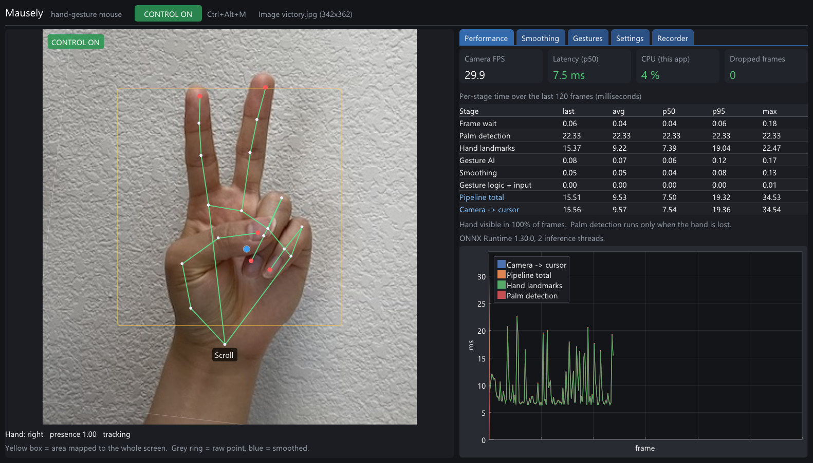
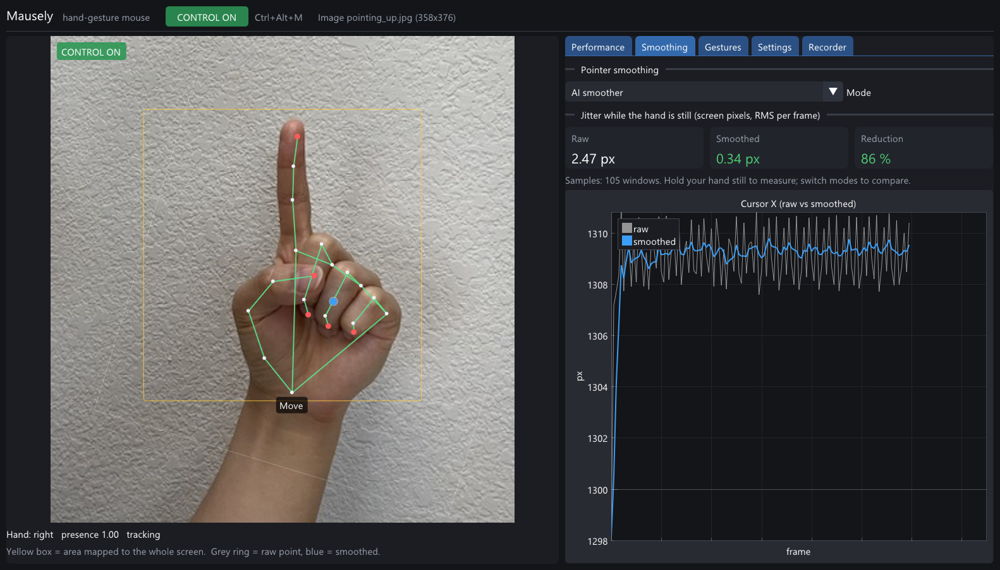
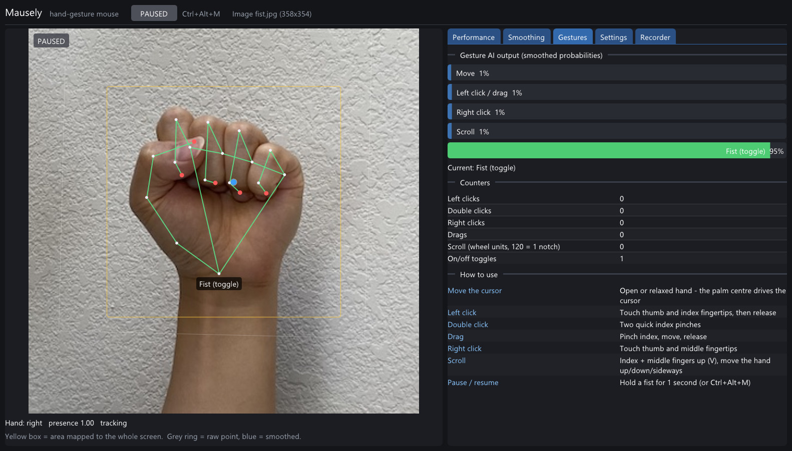
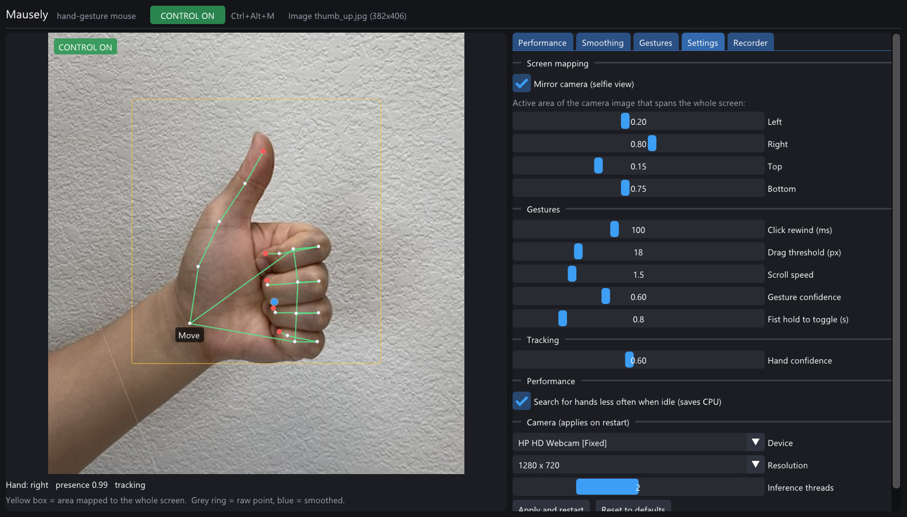

Control your mouse with
hand gestures and any webcam
Mausely is a free, open-source AI hand gesture mouse for Windows. Move the pointer, click, drag and scroll with your hand, touch-free, offline, and fast enough for a 2012 laptop.
Windows 10 / 11 · any webcam · no GPU, no internet, no installation · MIT license

A virtual mouse that feels like a real one
Most webcam "virtual mouse" projects are Python scripts with a shaky cursor. Mausely is a native C++ app with its own small AI models for gesture recognition and pointer smoothing.
🖐️ Real-time hand tracking
MediaPipe palm detection and 21-point hand landmarks run through ONNX Runtime on the CPU in about 8 ms per frame.
🧠 Gesture AI
A 7.5k-parameter neural network recognises move, pinch, right-click, scroll and fist poses. It works the same for left and right hands.
🎯 Steady, precise cursor
A learned smoother removed 65% of cursor jitter in tests without adding lag, and click rewind stops a pinch from dragging the pointer off its target.
📊 Live statistics
The dashboard shows per-stage timings (p50/p95), end-to-end latency, CPU usage, jitter before and after smoothing, and gesture probabilities.
🔒 Private and offline
No cloud and no network access at run time. Camera images are never stored.
🎓 Learns your hand
Record a minute of each gesture in the dashboard and retrain the gesture model on your own CPU in a few minutes.
Seven mouse actions, one hand
The app starts paused. Press Ctrl+Alt+M or hold a fist for one second to take control.
| Mouse action | Hand gesture |
|---|---|
| Move the cursor | Open or relaxed hand; the palm centre drives the pointer |
| Left click | Touch thumb and index fingertips, then release |
| Double click | Two quick index pinches; the second lands exactly on the first |
| Drag and drop | Pinch with the index finger, move, release |
| Right click | Touch thumb and middle fingertips |
| Scroll | Index and middle fingers up (V sign), move the hand up, down or sideways |
| Pause / resume | Hold a fist for 1 second, or press Ctrl+Alt+M |
Fast on old hardware
Measured on an Intel Core i7-3740QM (2012, no AVX2) with a built-in 720p webcam, CPU only.
Screenshots



Get started in a minute
- Download
Mausely-x.y.z-win64.zipfrom the latest release. - Unzip it anywhere and run
mausely.exe. No installer and no admin rights needed. - Show your open palm to the webcam and press
Ctrl+Alt+M.
Requires the Microsoft Visual C++ Redistributable (x64), which most PCs already have. Developers can build from source with CMake and any C++20 compiler.
Frequently asked questions
How do I control my mouse with hand gestures on Windows?
Download Mausely, run mausely.exe, show your palm to the webcam and press Ctrl+Alt+M. Move your open hand to move the cursor, pinch thumb and index finger to click, and make a V sign to scroll.
Does it need a GPU, a depth camera or the internet?
No. It runs on the CPU with any ordinary webcam, fully offline.
Is it free?
Yes. Mausely is free and open source under the MIT license.
Does it work for left-handed users?
Yes. The gesture features don't depend on which hand you use.
Can I make it recognise my gestures better?
Yes. Use the Recorder tab to capture a minute of each gesture, then retrain the model with the included Python script. Only hand landmark numbers are saved, never images.